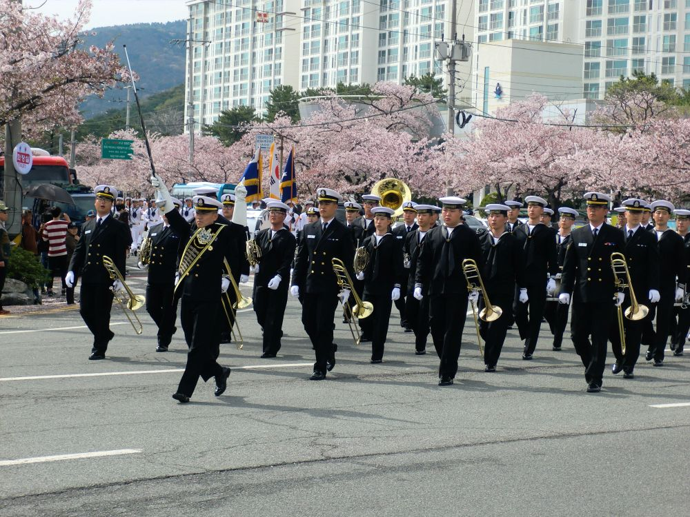
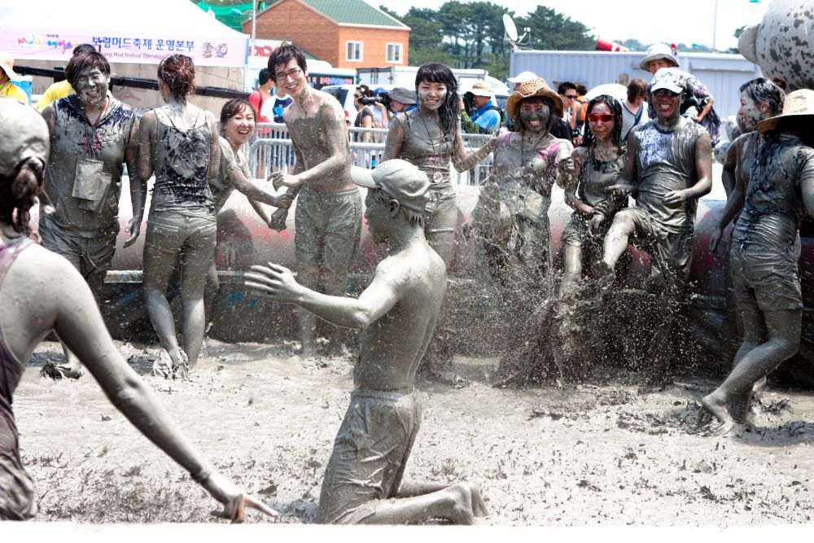
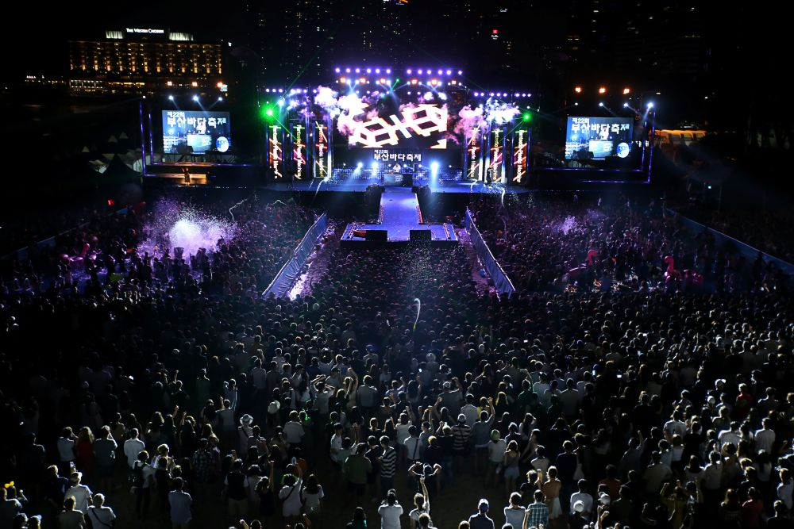

Jinhae Cherry Blossom Festival

military band parade
Image Source:
Wikimedia Commons
Location: Jinhae-gu, Changwon-si, Gyeongsangnam-do
Key highlights: cherry blossom, military band parade, night lighting
Festival dates: late March to early April
Visiting tips: 1 bring a tripod for night photos 2 use public transportation as traffic is very heavy
References:
Jinhae Cherry Blossom Festival (Official Site)
Jeju Canola Flower Festival
Jeju with canola flowers in full bloom
Image Source:
Wikimedia Commons
Location: Pyoseon-myeon, Seogwipo-si, Jeju-do
Key highlights: yellow canola flowers, flower trail walk, photo spots, flea market
Festival dates: late March to early April
Visiting tips: 1 bring a windbreaker as the area is quite windy 2 use a rental car as the festival area is far from downtown.
References:
Jeju Canola Flower Festival (Official Site)
Boryeong Mud Festival

People in a mud pool
Image Source:
Wikimedia Commons
Location: Dacheon Beach, Boryeong
Key highlights: mud experience programs such as mud pool, mud slide, mud painting, and mud massage featuring live concerts
Festival dates: late July to early August
Visiting tips: 1 bring a swimsuit, extra clothes, a towel, and sunscreen. 2 check whether you need advance tickets or on-site purchase 3 prepare waterproof storage for your phone
References:
Boryeong Mud Festival (Official Site)
Busan Sea Festival

Performance at the sea festival
Image Source:
Wikimedia Commons
Location: Haeundae Beach / Gwangalli Beach, Busan
Key highlights: beach parties, seaside concerts and performances, marine leisure activities
Festival dates: early August
Visiting tips: 1 bring a swimsuit, a hat, and extra clothes. 2 prepare waterproof cases or bags for your phone and belongings
References:
Busan Sea Festival (Official Site)

{kind=link}
{kind=link}
{kind=link}
{kind=link}